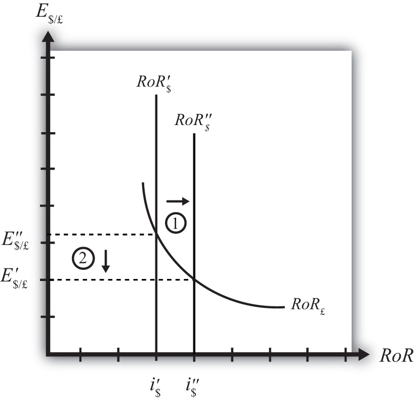

Suppose that the foreign exchange market (Forex) is initially in equilibrium such that RoR£ = RoR$ (i.e., interest rate parity holds) at an initial equilibrium exchange rate given by E′$/£. The initial equilibrium is depicted in Figure 16.7 "Effects of a U.S. Interest Rate Increase in a RoR Diagram". Next, suppose U.S. interest rates rise, ceteris paribus. Ceteris paribus means we assume all other exogenous variables remain fixed at their original values. In this model, the British interest rate (i£) and the expected exchange rate (E$/£e) both remain fixed as U.S. interest rates rise.
Figure 16.7 Effects of a U.S. Interest Rate Increase in a RoR Diagram
The increase in U.S. interest rates will shift the U.S. RoR line to the right from RoR′$ to RoR″$ as indicated by step 1 in Figure 16.7 "Effects of a U.S. Interest Rate Increase in a RoR Diagram". Immediately after the increase and before the exchange rate changes, RoR$ > RoR£. The adjustment to the new equilibrium will follow the “exchange rate too high” equilibrium story earlier. Accordingly, higher U.S. interest rates will make U.S. dollar investments more attractive to investors, leading to an increase in demand for dollars on the Forex resulting in an appreciation of the dollar, a depreciation of the pound, and a decrease in E$/£. The exchange rate will fall to the new equilibrium rate E″$/£ as indicated by step 2 in the figure.
In summary, an increase in the U.S. interest rate will raise the rate of return on dollars above the rate of return on pounds, lead investors to shift investments to U.S. assets, and result in a decrease in the $/£ exchange rate (i.e., an appreciation of the U.S. dollar and a depreciation of the British pound).
In contrast, a decrease in U.S. interest rates will lower the rate of return on dollars below the rate of return on pounds, lead investors to shift investments to British assets, and result in an increase in the $/£ exchange rate (i.e., a depreciation of the U.S. dollar and an appreciation of the British pound).
Consider the economic change listed along the top row of the following table. In the empty boxes, indicate the effect of each change, sequentially, on the variables listed in the first column. For example, a decrease in U.S. interest rates will cause a decrease in the rate of return (RoR) on U.S. assets. Therefore a “−” is placed in the first cell under the “A Decrease in U.S. Interest Rates” column of the table. Next in sequence, answer how the RoR on euro assets will be affected. Use the interest rate parity model to determine the answers. You do not need to show your work. Use the following notation:
+ the variable increases
− the variable decreases
0 the variable does not change
A the variable change is ambiguous (i.e., it may rise, it may fall)
| A Decrease in U.S. Interest Rates | |
|---|---|
| RoR on U.S. Assets | − |
| RoR on Euro Assets | |
| Demand for U.S. Dollars on the Forex | |
| Demand for Euros on the Forex | |
| U.S. Dollar Value | |
| Euro Value | |
| E$/€ |